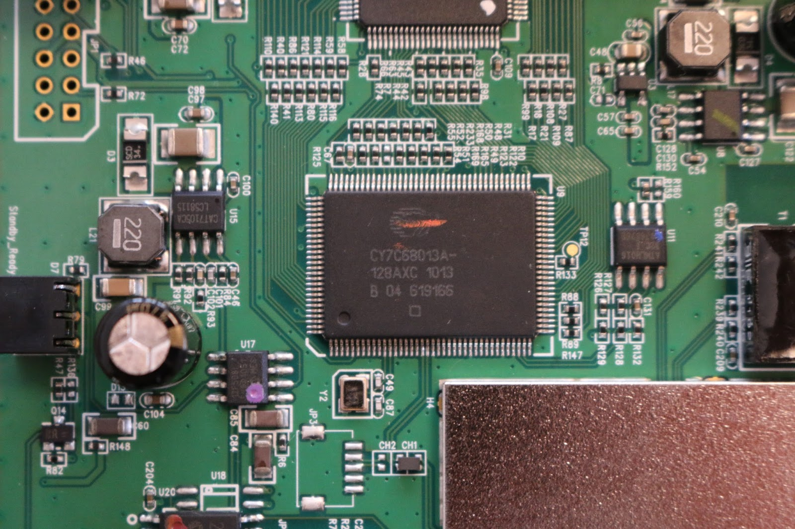
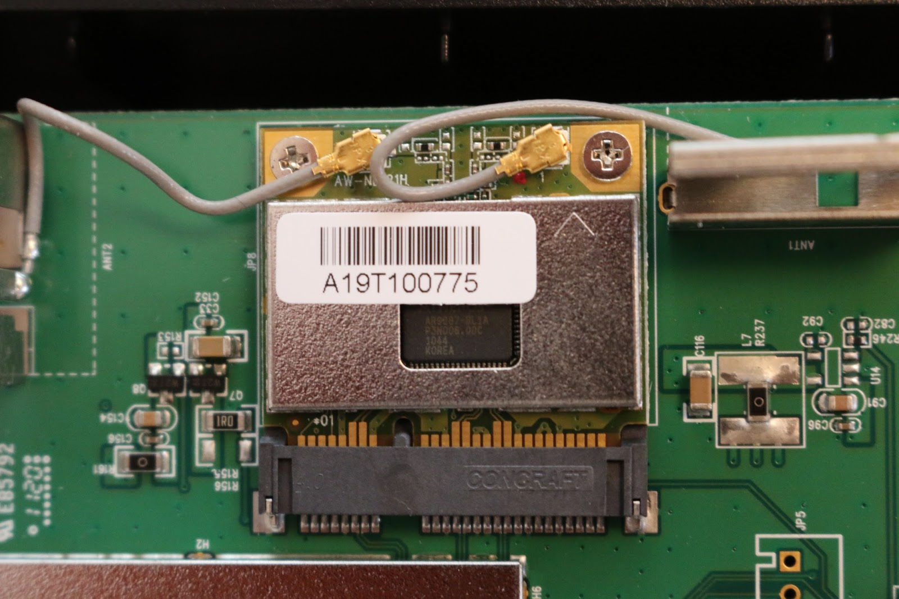

space
space
TerraTec Connect N3 Hack Part 1
Posted on November 6, 2016
by Simon Plakolb
How it all started
So the other day I stumbled over an old device of my father which had stopped working about a year ago or so. Since lately I had gotten more interest into device hacking, I figured I could try to get it back to life again.
Some background info
Terratec is a German brand founded in 1994 and taken over by likewise German Ultron GmbH in 2013. It became popular focusing on audio gear, but later on also started selling other consumer home entertainment and media hardware.
The Terratec Connect N3 was launched in early 2011, when the company struggled under the economic crisis and decreasing sales. It promised to provide an easy way to consume DVB satellite channels over the local network on any Windows Vista or 7 PC. Furthermore it came with a wireless AP, totally “secure because of WPS”(sic!) which can be turned off at least.
Well we all know that the consumer market draws the companies into measurements lowering the production prices. Especially in times of a crisis they like to save money big time, so they tend to do in software and security, ’cause who cares anyway?
Covering the basic stuff
First of all I wondered how the whole thing works, so I asked myself how I’d do it. Obviously the most intuitive way of implementing this would be to decode the signal on the remote device and providing a stream over the network and additionally a web interface for channel selection and setup. While this approach would provide cross platform compatibility, easy interfacing via the Windows Media Center (a relict from back then) would be broken, yet it is promised on the packaging and my father told me he had only used the Microsoft software. Apparently there’d also be Sat > IP but nobody cared to implement that.
After some research I found out, that the device is told to be discovered and operated by Windows as an USB DVB-S stick. So i did an Nmap scan to reveal the open port(-s) providing the mysterious service, but only port 23 and 80 were open.
Http is open due to the AP configuration interface being accessible via admin:password over HTTP, so it says in the manual.
Telnet is, well telnet .. an old servicing interface known for its lack of encryption. I tried the default HTTP password and other trivial combinations but had no success accessing the device. Later we’ll see, I just would’ve had to try a little harder.
Using a Swiss knife and eagles eyes
Under its rubber feet the Connect N3 has four Phillips screws and after some fiddling the back plate comes off, revealing the internals of our device.
There’s a micro with an huge heat sink right besides the coax input, which supposedly does some codec work, I didn’t care enough to take off the heat sink so if anybody knows the model or exact task of it, feel free to leave a comment down below.
From there, traces lead to a Microsemi A3P250 FPGA with included Cortex M, I suppose it implements the logic of the simulated USB device, right beside it there is a Cypress USB controller.
It could be looked into its configuration further via the JTAG port beside it, I didn’t care enough though.
 
USB 2.0 standard defines 4 contacts: ACVV, DPLUS, DMINUS and AGND, all four of which lead from the controller right under a shield, where we can guess, that our main processor resides.
We can also see a WiFi-Card with an exposed Atheros controller, so most likely the main chip is an Atheros too, as they were often sold together.
From beneath the shield four traces lead to a debugging port, likely UART. So I grabbed my multimeter and looked for the ground pin, connected my UART USB interface and booted the N3 up.